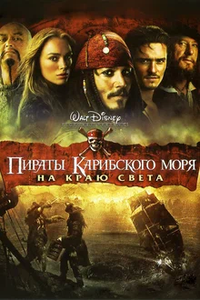
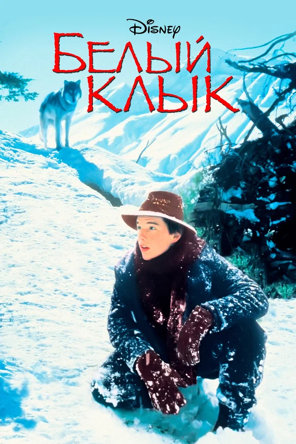

8.1



7.8
из всех искусств для нас важнейшим является кино
Приключенческий фильм — остросюжетный вид игрового фильма,
соответствующий приключенческому роману в литературе.
Для него характерна напряжённая, стремительно развёртывающаяся фабула,
основанная на приключении — неожиданном событии, нарушающем привычный
ход жизни, заключающем в себе потенциальную опасность и побуждающем
героя к действию.
В качестве опасности может фигурировать и объективная ситуация: война, революция, освоение неведомых территорий, природные катастрофы, а также личные мотивы: поиски сокровищ, месть, спасение.
8.1
7.8